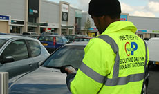
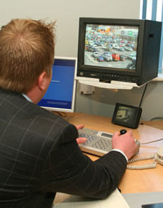

Facilities Management Services by CP Plus
We specialise in FFM. That’s flexible facilities management.
Whatever FM services you require for the smooth running of your site we can provide them. Our wide range of FM services includes:
- Cleaning: pathways, roadways, toilets, car parks, specialist graffiti removal, bollards, oil stains and spillages.
- Landscaping: planting and maintaining common areas, from tidying beds and trimming hedges to major tree surgery.
- Waste management and disposal: bin emptying, recycling and waste compacting.
- Signage: providing, maintaining and upgrading parking and way-finding signs 
- Lighting: providing and maintaining lighting, an essential element in establishing a secure and reassuring consumer environment.
- Repairs: keeping a watching eye on all common areas, reporting defects and undertaking minor and major repairs.
- Management: if you need a centre manager on site to handle sensitive areas like security, key-holding, alarm testing, gate locking and cash collections, we can provide you with trained, trusted personnel to take on that role.
- Parking: of course, if you need car park management support, we’d be only too happy to introduce you to the benefits of our many years of experience in that sector, providing enforcement, charging, security, line marking, cleaning and other car park management services.
- Security: CP Plus is also an accredited and licensed security provider. We can supply services or advice, from manned guarding to CCTV monitoring.
Keep it Simple - CP Plus has the experience: we bring our expertise in car park management and security across the whole facilities management sector.
Visit the CP Plus main website for information on our car park management solutions.